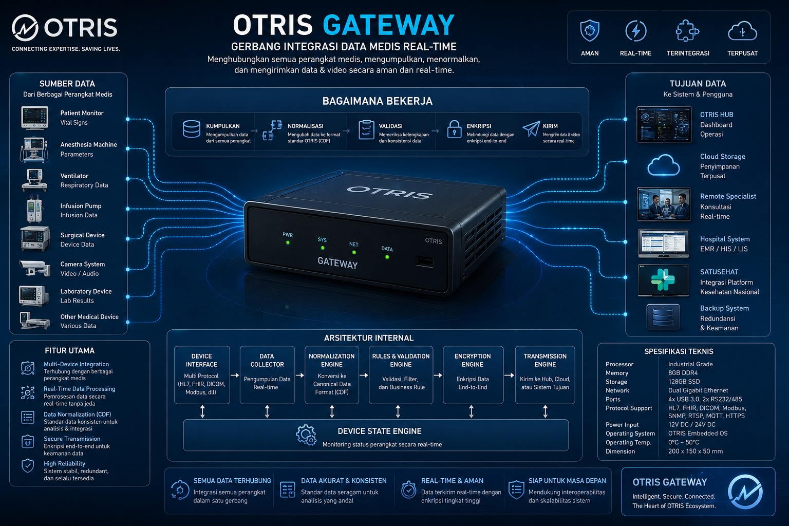

THE DIGITAL BRIDGE TO SATUSEHAT
INTEROPERABILITAS DATA KESEHATAN
Dari Pulau Terpencil ke Rekam Medis Nasional
OTRIS bertindak sebagai penerjemah dari format data kanonikal ke FHIR, sehingga data ruang operasi real-time dapat menjadi bagian dari rekam medis elektronik nasional.
MEDICAL DEVICES → PASSIVE SNIFFING → OTRIS GATEWAY → FHIR/HTTPS/AUDIT TRAIL → SATUSEHAT

SUMBER: Patient Monitor, Anesthesia, Ventilator, Infusion Pump, Camera • TUJUAN: OTRIS HUB, Cloud, SATUSEHAT, Backup
COMPLIANCE
Wajib PMK 24/2022. Data vital, gambar, laporan, audit trail langsung ke SATUSEHAT.
PERFORMANCE
MQTT real-time + HTTPS SATUSEHAT API. Latency Device→Bus <12ms p95
VALUE
Satu gateway, banyak perangkat, satu jalur tata kelola. Semua data terhubung.